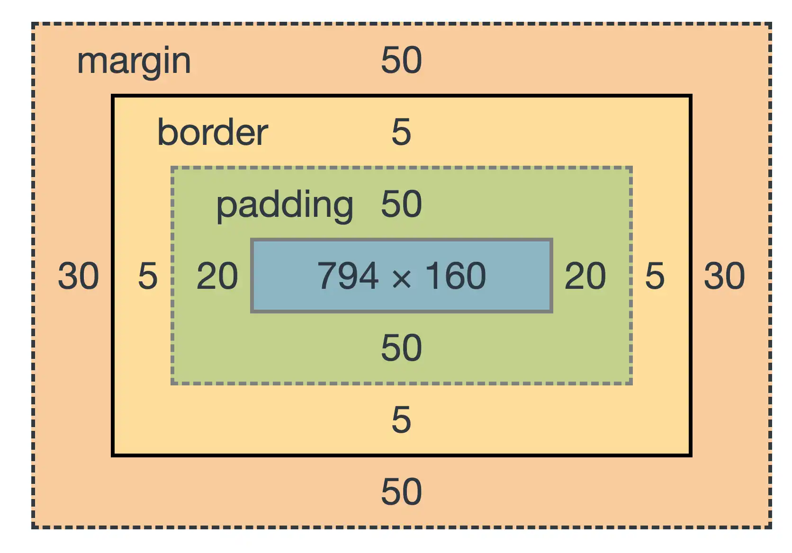

Introdução
O que é CSS?
CSS (Cascading Style Sheets) é a linguagem usada para estilizar páginas web.
Enquanto o HTML define o conteúdo (como títulos, parágrafos e imagens), o CSS define a aparência desse conteúdo — como cores, tamanhos, posições, espaçamento e layout.
Para que serve o CSS?
O CSS permite:
- Alterar cores, fontes e fundos;
- Posicionar elementos com precisão;
- Criar layouts responsivos que se adaptam a celulares e tablets;
- Aplicar animações e efeitos visuais modernos;
- Separar conteúdo (HTML) de estilo (CSS), facilitando a manutenção.
Conceitos Importantes
- Cascata: O CSS aplica regras com base em prioridades — estilos embutidos > internos > externos.
- Seletores: Definem quais elementos serão estilizados (por tag, id, classe etc.).
- Box Model: Todo elemento é uma "caixa" com conteúdo, padding, borda e margem.
- Responsividade: CSS pode adaptar a página a diferentes tamanhos de tela.
Como aplicar o CSS?
Existem 3 formas de aplicar CSS em uma página:
- CSS Interno: dentro da tag <style> no <head>
- CSS Externo: em um arquivo separado (.css) e importado com <link>
- CSS Embutido: direto no elemento com o atributo style
Como funciona o CSS?
O CSS é baseado em regras de estilo que seguem esta estrutura:
seletor {
propriedade: valor;
}
- Seletor: escolhe o elemento HTML a ser estilizado
- Propriedade: define o que será alterado (ex: cor, tamanho)
- Valor: define como será (ex: vermelho, 20px)
Exemplo:
p {
color: red;
text-align: center;
}
Esse código faz com que todos os parágrafos (<p>) fiquem vermelhos e centralizados.
Seletores CSS
Os seletores são o "caminho" usado pelo CSS para encontrar quais elementos HTML serão estilizados. Eles são a porta de entrada para aplicar regras visuais a qualquer parte da página.
Tipos de Seletores mais comuns:
Seletor de elemento (tag)
Estiliza todos os elementos de uma mesma tag:
p {
color: blue;
}
Todos os <p> da página ficarão azuis.
Seletor de classe
Aplica o estilo a qualquer elemento com class="nome". Use o ponto ".":
.center {
text-align: center;
}
Qualquer elemento com class="center" ficará centralizado.
Seletor de ID
Estiliza um único elemento com id="nome". Use a cerquilha(ou jogo da velha ou hashtag) "#":
#menu {
background-color: #f5f5f5;
}
Seletor universal
Aplica estilos a todos os elementos da página:
* {
margin: 0;
padding: 0;
}
Seletor descendente
Seleciona elementos dentro de outros:
main p {
color: gray;
}
Só aplica estilo aos <p> dentro de <main>.
Seletor de pseudo-classes
Estiliza estados específicos:
a:hover {
color: red;
}
O link muda de cor quando o mouse passa por cima.
Seletor de pseudo-elementos
Permite estilizar partes de um elemento:
p::first-line {
font-weight: bold;
}
Box Model
No CSS, todo elemento HTML é uma caixa invisível composta por 4 partes:

Componentes do Box Model:
- Content (conteúdo): Onde fica o texto, imagem, etc.
- Padding: Espaço interno, entre o conteúdo e a borda.
- Border: Linha que envolve o padding e o conteúdo.
- Margin: Espaço externo, entre o elemento e outros ao redor.
Exemplo:
div {
width: 200px;
padding: 20px;
border: 5px solid black;
margin: 10px;
}
Largura final: 200 + 20 + 20 + 5 + 5 + 10 + 10 = 270px
Você pode mudar isso com box-sizing: border-box, para que o tamanho final respeite a largura definida.
Responsividade
Responsividade é a capacidade de um site se adaptar a diferentes tamanhos de tela (celulares, tablets, desktops), mantendo usabilidade e boa aparência
Como aplicar responsividade com CSS:
Viewport meta tag
No <head> do HTML:
<meta name="viewport" content="width=device-width, initial-scale=1.0">
Media Queries
Permitem aplicar estilos condicionalmente, conforme o tamanho da tela:
/* Para telas com até 768px de largura (ex: celulares) */
@media screen and (max-width: 768px) {
body {
font-size: 16px;
padding: 10px;
}
.menu {
display: block;
}
}
Layouts flexíveis com Flexbox e Grid
Evite larguras fixas em pixels. Prefira porcentagens ou unidades relativas:
.container {
display: flex;
flex-wrap: wrap;
}br
.card {
flex: 1 1 100%; /* ocupa toda a tela no mobile
}